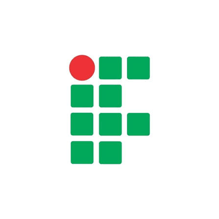
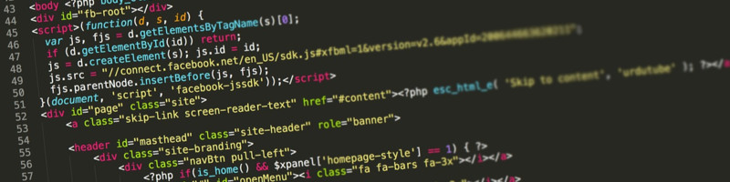
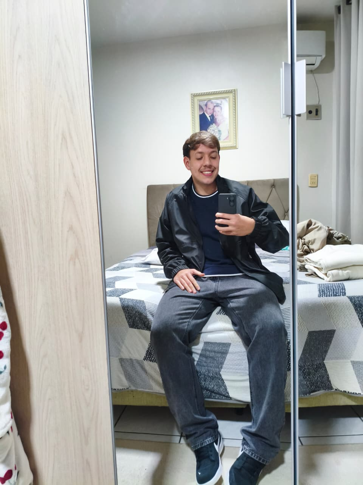

Técnologo em Redes de Computadores
IFC - Campus Araquari
— atual
Programação, Experiências e Cotidianos


Redes de Computadores / Desenvolvimento Web
Joinville, Santa Catarina
Sou estudante do curso técnico integrado em Redes de Computadores e estou desenvolvendo este portal como parte da disciplina de Desenvolvimento Web I. Gosto de entender como as coisas funcionam por trás das telas, seja em uma rede de computadores ou em uma página web.
Neste espaço registro um pouco da minha trajetória, das tecnologias que venho estudando e dos meus interesses pessoais.

IFC - Campus Araquari
— atual

Desenvolvimento Web I